En ingeniería estructural, un sistema se refiere al conjunto de elementos estructurales interconectados que trabajan
en conjunto para resistir cargas y garantizar la estabilidad y seguridad de una construcción. En particular, un sistema
dinámico es una estructura cuya respuesta varía en el tiempo ante cargas cambiantes, como sismos, viento, impactos o
transito.
Al estudiar sistemas dinámicos es fundamental distinguir entre el sistema físico y el modelo matemático. El sistema
físico es la estructura real, con sus materiales, geometría y condiciones de carga, sujeta a imperfecciones
y a interacciones complejas con el entorno. En cambio, el modelo matemático es una representación
simplificada que traduce ese comportamiento en ecuaciones, permitiendo predecir su respuesta bajo distintas
condiciones.
Estos modelos matemáticos se construyen a partir de principios fundamentales, es decir, de las leyes físicas que
gobiernan la mecánica estructural. Entre ellas destacan la cinemática y compatibilidad geométrica, ecuaciones de
balance (Newton, Lagrange, etc.), relaciones constitutivas de los materiales, y la geometería y condiciones de
contorno e iniciales del sistema físico. A partir de estos principios, se generan modelos matemáticas que representan de
forma coherente el comportamiento de la estructura, aunque siempre con ciertas simplificaciones necesarias para el
análisis.
Los sistemas sistemas dinámicos pueden ser representados gráficamente por diagramas de bloques:
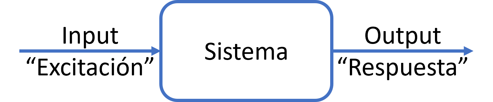
Figura 1.1: Representación de un sistema dinámico
Principales razones para construir modelos matemáticos de sistemas dinámicos:
Análisis
Diseño
Control y monitoreo
1.2. Tipos de sistemas
1.2.1. Estáticos vs Dinámicos
Sistema Estático: respuesta solo depende de la excitación actual (independiente del tiempo).
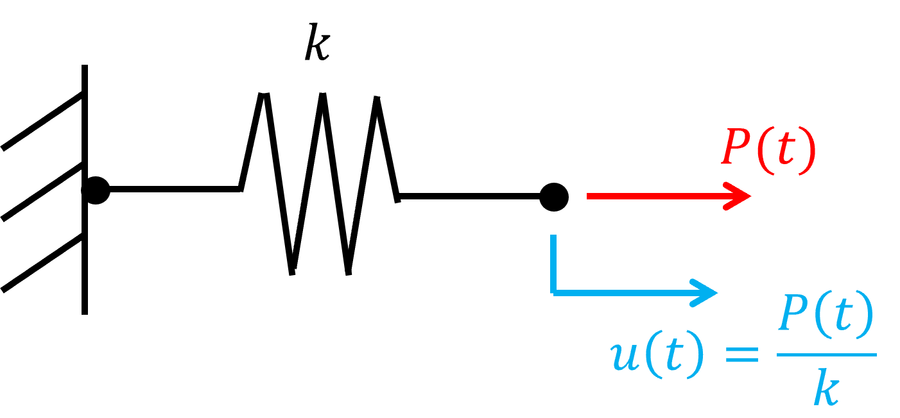
Sistema Dinámico: respuesta actual depende de la excitación actual y de la “historia” de la respuesta.
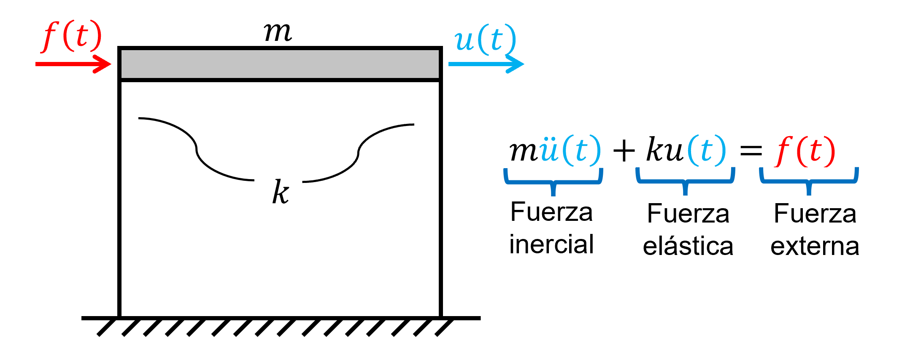
Si la respuesta del sistema dinámico está basada en la excitación actual y pasada, entonces el sistema se conoce
como causal (todos los sistemas físicos).
Si la respuesta del sistema dinámico está basada en excitación actual, pasada y futura, entonces el sistema es
anticausal (solo aplicable en sistemas teóricos offline, por ejemplo, en procesamiento digital de
señales).
1.2.2. Univariado vs Multivariado
SISO: Single Input, Single Output.
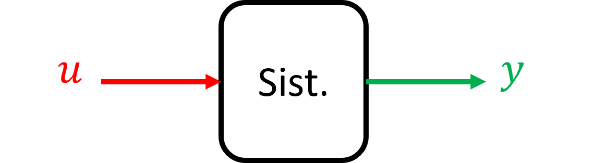
\(u \in \mathbb {R}\): entrada escalar
\(y \in \mathbb {R}\): respuesta escalar
SIMO: Single Input, Multi Output.
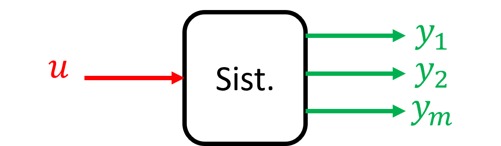
\(u \in \mathbb {R}\): entrada escalar
\(y \in \mathbb {R}^m\): respuesta vectorial
MISO: Multi Input, Simple Output.
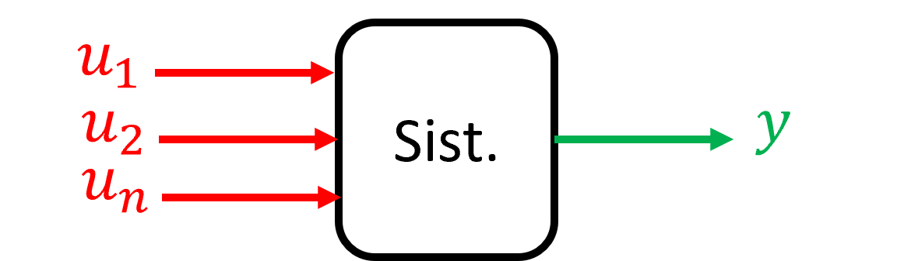
\(u \in \mathbb {R}^n\): entrada vectorial
\(y \in \mathbb {R}\): respuesta escalar
MIMO: Multi Input, Multi Output.
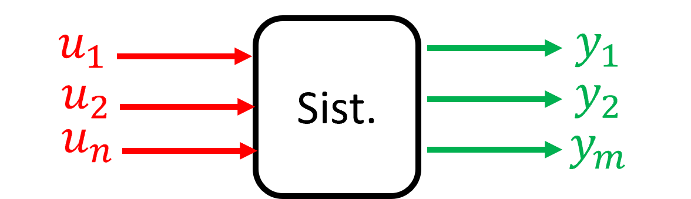
\(u \in \mathbb {R}^n\): entrada vectorial
\(y \in \mathbb {R}^m\): respuesta vectorial
1.2.3. Lineal vs Nolineal
Un sistema lineal es tal que cumple con el principio de superposición.
Aditividad: Si \(u_1 \rightarrow y_1\), \(u_2 \rightarrow y_2\), entonces: \(u = u_1 + u_2 \rightarrow y = y_1 + y_2\)
Sistema invariantes en el tiempo (time invariant) \(\longrightarrow \) parámetros del modelo son constantes en el tiempo.
Ejemplo: Sistemas de 1GDL (Figura 1.3), con masa, rigidez y amortiguamiento constante son LTI
(linear time invariant).
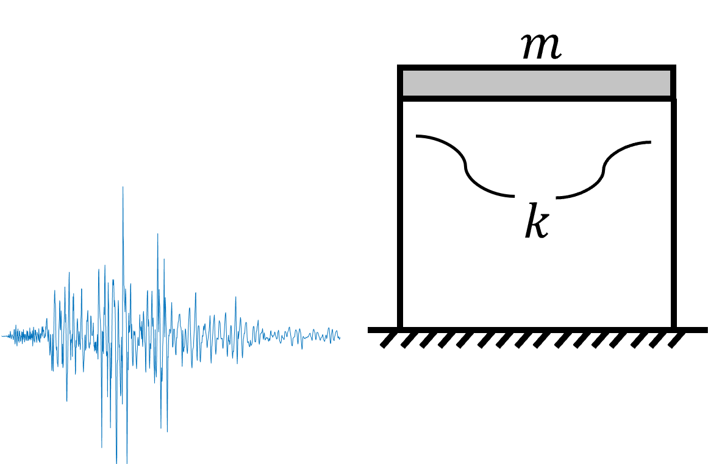
Figura 1.3: Sistema LTI (linear time invariant)
Sistema variante en el tiempo (time variant) \(\longrightarrow \) parámetros del modelo varían en el tiempo.
Ejemplo: Puentes con masa movil (Figura 1.4), por ejemplo por el transito de un vehículo pesado (la masa del
sistema varía). En este caso el sistema dinámico es LTV (linear time variant).
Figura 1.4: Sistema LTV (linear time variant)
1.2.5. Determinístico vs Estocástico
Si el input del sistema es conocido (y el sistema no incorpora incertidumbre), entonces el output será predecible \(\longrightarrow \)
Determinístico
Ejemplo: Simular múltiples veces el mismo registro (input) sobre el mismo edifico (sistema), se obtienen siempre
las mismas respuestas (output).
Si el input del sistema posee incertidumbre (y/o el sistema incorpora incertidumbre), entonces el output también
tiene incertidumbre y no es predecible \(\longrightarrow \) Estocástico
Ejemplo: Simular peatones diferentes (input con incertidumbre en masa del peatón, velocidad al
caminar y frecuencia de pasos) sobre un mismo puente (sistema), se obtendrán respuestas diferentes
(outputs)
1.2.6. Continuo vs Discreto
Sistema Continuo: entrada y salida son función del tiempo.
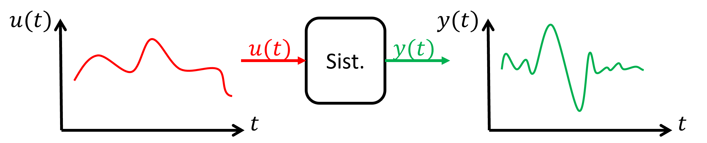
Sistema Discreto: señales han sido discretizadas en el tiempo. Ejemplo: Interés de una cuenta bancaria. \begin{align*} y(k+1)=(1+r)y(k) \longrightarrow \text {Ecuación de diferencias finitas} \end{align*}
\(y(k+1)\): balance cuenta año \(k+1\)
\(r\): interés compuesto anual
\(y(k)\): balance cuenta año \(k\)
Las señales de los sistemas físicos son continuas, pero que al momento de ser observadas por dispositivos digitales,
estas señales se discretizan en función del tiempo.
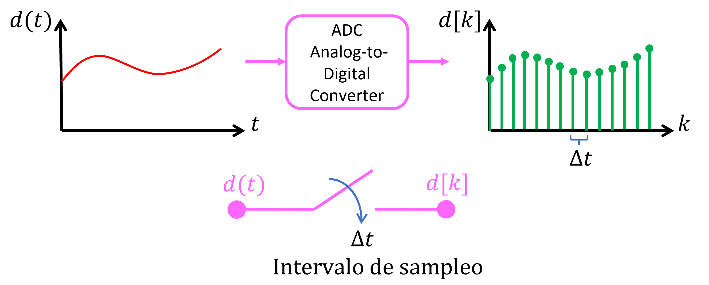
1.3. Respuesta de sistemas LTI en tiempo continuo
LTI: Linear, Time-Invariant.
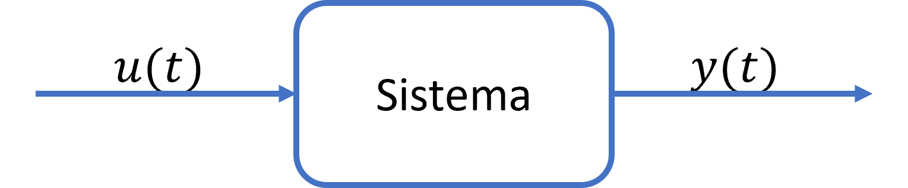
Los sistemas LTI, son aquellos cuyas propiedades y parámetros no varían en el tiempo, es decir, que los coeficientes
de las ecuaciones diferenciales de los modelos matemáticos de los sistemas dinámicos son constantes en el tiempo \(a_i=cte\).
\begin{align*} \frac {d^ny}{dt^n}+a_{n-1}\frac {d^{n-1}y}{dt^{n-1}}+...+a_2\frac {d^2y}{dt^2}+a_1\frac {dy}{dt}+a_0y=u(t) \end{align*}
\(u(t)\): excitación
\(y(t)\): respuesta
\(a_i\): coeficientes
Dada una excitación \(u(t)\), la respuesta se obtiene al resolver la ecuación diferencial: \begin{align*} y(t)=y_H(t)+y_p(t) \end{align*}
\(y_H(t)\) es la respuesta homogénea (para \(u(t)=0\), con condiciones iniciales)
\(y_p(t)\) es la respuesta particular (para \(u(t)\neq 0\))